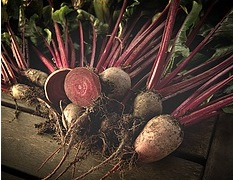
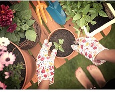

Events & WorkShop
There are several events and workshops related to plant nurseries and gardening. Here are some options you might find interesting.
Gardening
June 3-5Gardening within a plant nursery involves various tasks related to plant care and maintenance. Here are some aspects of gardening in a nursery setting: Planting and Transplanting: Nursery gardeners sow seeds, transplant seedlings, and pot young plants. They ensure proper spacing and soil conditions for healthy growth. Weeding and Pruning: Regular weeding keeps unwanted plants (weeds) from competing with nursery stock. Pruning maintains plant shape, removes dead or diseased parts, and encourages branching. Fertilization and Soil Management: Gardeners apply appropriate fertilizers to promote growth. Soil testing helps maintain optimal pH levels and nutrient balance. Pest and Disease Control: Monitoring for pests and diseases is crucial. Gardeners use safe pesticides and preventive measures. Watering: Proper irrigation ensures plants receive adequate moisture. Overwatering or underwatering can harm plants. Mulching: Mulch helps retain soil moisture, suppress weeds, and regulate temperature. Organic mulches (e.g., wood chips) are commonly used.

Plant a Vegetable Patch
11am-2pm 1st Sunday every monthStarting a vegetable patch is an exciting endeavor, whether you’re a seasoned gardener or a beginner. Here are some steps to guide you: Choose the Right Spot: Find a sunny area in your garden. Most vegetables thrive with ample sunlight. Ensure the spot is level, well-drained, and sheltered from strong winds. Prepare the Soil: Dig the soil thoroughly to remove weeds and stones. Rake it level for easy management. Consider pre-warming the soil using a cloche to improve germination rates. Design Your Plot: Draw a plan on paper. Group beds in fours for crop rotation. Include flowers for cutting, like gladioli and sunflowers. Remove Weeds: Dig out perennial weeds (e.g., couch grass, bindweed) before planting. Leave the soil for a couple of weeks after weeding to allow annual seeds to germinate, then hoe them off. Planting: Follow seed packet instructions. Consider growing easy-to-grow crops for beginners. Mulch and Water: Apply mulch to retain moisture and suppress weeds. Water consistently to keep your veggies happy!

Nursery Kids Day
September 1stA nursery fun day is a set day that nurseries might put aside to carry out specific activities across all the age groups that are looked after. This might be linked to a national event, or a theme that is fun and informative to explore. A nursery fun day might ask children to dress up in a certain way to celebrate the theme, and set menus might be created that are also linked to the themes. Parents are often invited to fun days, so they can see their children enjoy the activities and even take part in many themselves. This will be organised so that parents have specific time slots to visit, otherwise it can get busy!
Worm Farm
December 21stWorm farming, also known as vermicomposting, is an eco-friendly and efficient way to break down organic waste materials into nutrient-rich fertilizer for your garden. Here’s how you can start your own worm farm: Choose a Container: Select a suitable container or bin for your worm farm. It can be a plastic bin, wooden box, or purpose-built worm farm system. Ensure it has drainage holes to prevent waterlogging. Prepare Bedding: Use bedding material such as shredded newspaper, cardboard, or coconut coir. Moisten the bedding to create a damp environment. Add Worms: Red worms (Eisenia fetida) are ideal for worm farming due to their feeding habits and high reproduction rate. Place the worms on top of the bedding. Feed Your Worms: Worms consume a variety of organic matter: Fruit and vegetable scraps Coffee grounds Eggshells Yard waste Avoid citrus, oily foods, and dairy products. Worms can eat up to half their weight daily. Maintain Conditions: Keep the worm farm in a cool, shaded area. Ensure proper moisture (damp but not too wet). Maintain a neutral pH. Cover food scraps with a damp cloth to prevent fruit flies. Harvest Worm Castings: After 3 to 6 months, collect nutrient-rich worm castings from the bottom layer. Apply the castings to your garden soil or potted plants.